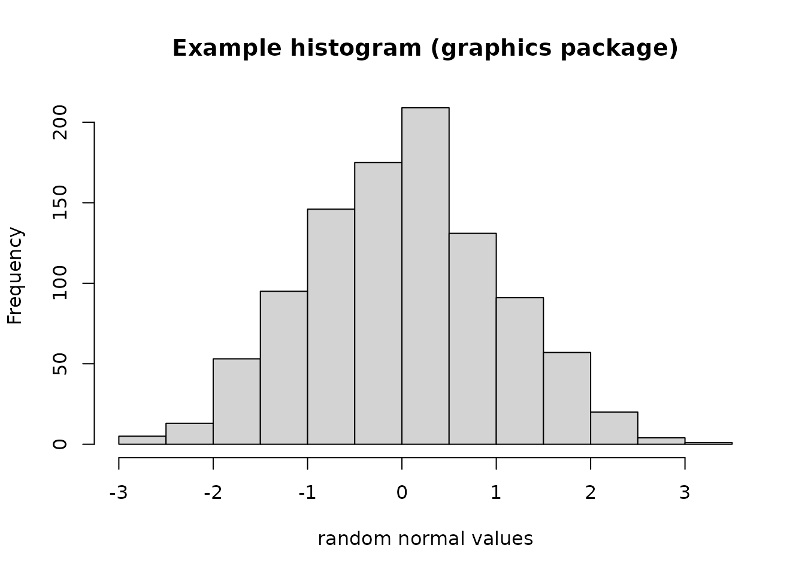
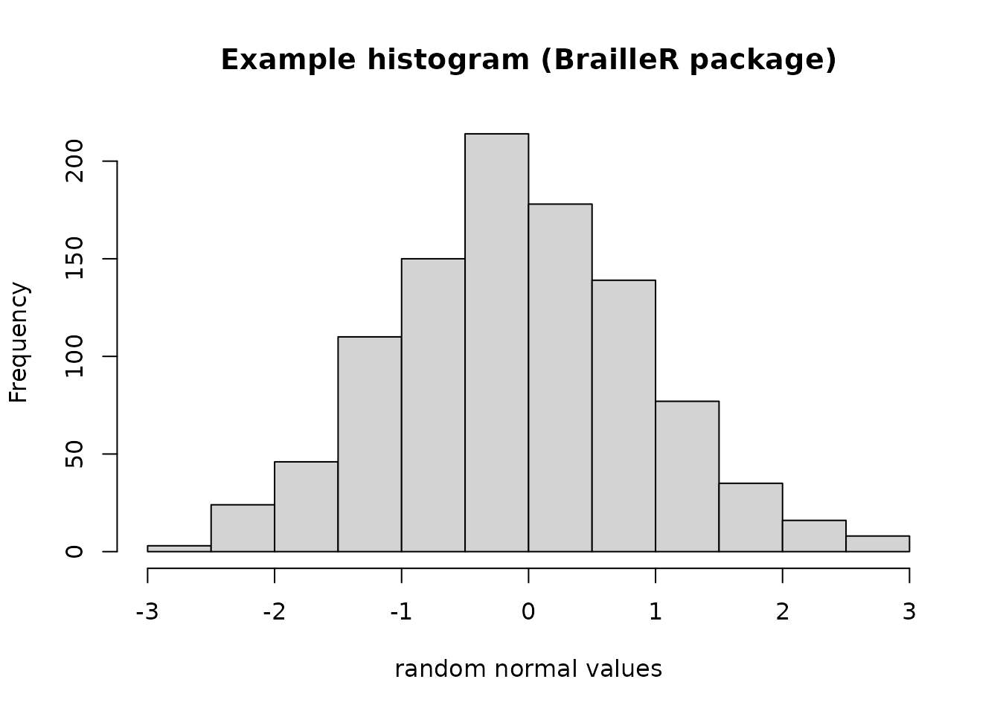

The BrailleR package Example 1
A. Jonathan R. Godfrey
Source:vignettes/Ex1histograms.rmd
Ex1histograms.rmdThe BrailleR package Example 1.
Histograms
The first and most commonly used example demonstrating the value of the BrailleR package to a blind user is the creation of a histogram.
A histogram of 1000 random values from a normal distribution
This is a histogram, with the title: with the title: Histogram of x
"x" is marked on the x-axis.
Tick marks for the x-axis are at: -3, -2, -1, 0, 1, 2, and 3
There are a total of 1000 elements for this variable.
Tick marks for the y-axis are at: 0, 50, 100, 150, and 200
It has 14 bins with equal widths, starting at -3.5 and ending at 3.5 .
The mids and counts for the bins are:
mid = -3.25 count = 1
mid = -2.75 count = 1
mid = -2.25 count = 20
mid = -1.75 count = 44
mid = -1.25 count = 96
mid = -0.75 count = 143
mid = -0.25 count = 169
mid = 0.25 count = 209
mid = 0.75 count = 151
mid = 1.25 count = 95
mid = 1.75 count = 45
mid = 2.25 count = 19
mid = 2.75 count = 4
mid = 3.25 count = 3The VI() command actually calls the VI.histogram() command as the hist() command creates an object of class “histogram”.
Important features
The VI() command has added to the impact of issuing the hist() command as the actual graphic is generated for the sighted audience. The blind student can read from the text description so that they can interpret the information that the histogram offers the sighted world.
The above example showed the standard implementation of the hist() function. The hist() function of the graphics package does not store the additional arguments that improve the visual attractiveness. The solution (perhaps temporary) is to mask the original function with one included in the BrailleR package that calls the graphics package function, and then adds extra detail for any added plotting arguments.
This is best illustrated using the example included in the BrailleR::hist() function.
example(hist)
hist> x=rnorm(1000)
hist> # the stamdard hist function returns
hist> MyHist=graphics::hist(x, xlab="random normal values", main="Example histogram (graphics package)")
hist> MyHist
$breaks
[1] -3.5 -3.0 -2.5 -2.0 -1.5 -1.0 -0.5 0.0 0.5 1.0 1.5 2.0 2.5 3.0 3.5
[16] 4.0
$counts
[1] 1 3 18 51 102 177 177 170 153 89 34 16 6 1 2
$density
[1] 0.002 0.006 0.036 0.102 0.204 0.354 0.354 0.340 0.306 0.178 0.068 0.032
[13] 0.012 0.002 0.004
$mids
[1] -3.25 -2.75 -2.25 -1.75 -1.25 -0.75 -0.25 0.25 0.75 1.25 1.75 2.25
[13] 2.75 3.25 3.75
$xname
[1] "x"
$equidist
[1] TRUE
attr(,"class")
[1] "histogram"
hist> # while this version returns
hist> MyHist=hist(x, xlab="random normal values", main="Example histogram (BrailleR package)")
hist> MyHist
$breaks
[1] -3.5 -3.0 -2.5 -2.0 -1.5 -1.0 -0.5 0.0 0.5 1.0 1.5 2.0 2.5 3.0 3.5
[16] 4.0
$counts
[1] 1 3 18 51 102 177 177 170 153 89 34 16 6 1 2
$density
[1] 0.002 0.006 0.036 0.102 0.204 0.354 0.354 0.340 0.306 0.178 0.068 0.032
[13] 0.012 0.002 0.004
$mids
[1] -3.25 -2.75 -2.25 -1.75 -1.25 -0.75 -0.25 0.25 0.75 1.25 1.75 2.25
[13] 2.75 3.25 3.75
$xname
[1] "x"
$equidist
[1] TRUE
$main
[1] "Example histogram (BrailleR package)"
$xlab
[1] "random normal values"
$ExtraArgs
$ExtraArgs$main
[1] "Histogram of x"
$ExtraArgs$xlab
[1] "x"
$ExtraArgs$ylab
[1] "Frequency"
$ExtraArgs$sub
[1] ""
$NBars
[1] 15
$par
$par$xaxp
[1] -2 4 3
$par$yaxp
[1] 0 150 3
$xTicks
[1] -2 0 2 4
$yTicks
[1] 0 50 100 150
attr(,"class")
[1] "Augmented" "histogram"
hist> # The VI() method then uses the extra information stored
hist> VI(MyHist)
This is a histogram, with the title: with the title: Example histogram (BrailleR package)
"x" is marked on the x-axis.
Tick marks for the x-axis are at: -2, 0, 2, and 4
There are a total of 1000 elements for this variable.
Tick marks for the y-axis are at: 0, 50, 100, and 150
It has 15 bins with equal widths, starting at -3.5 and ending at 4 .
The mids and counts for the bins are:
mid = -3.25 count = 1
mid = -2.75 count = 3
mid = -2.25 count = 18
mid = -1.75 count = 51
mid = -1.25 count = 102
mid = -0.75 count = 177
mid = -0.25 count = 177
mid = 0.25 count = 170
mid = 0.75 count = 153
mid = 1.25 count = 89
mid = 1.75 count = 34
mid = 2.25 count = 16
mid = 2.75 count = 6
mid = 3.25 count = 1
mid = 3.75 count = 2Warning
The VI() function is partially reliant on the use of the hist() function that is included in the BrailleR package. If a histogram is created using a command that directly links to the original hist() command found in the graphics package, then the VI() command’s output will not be as useful to the blind user. This mainly affects the presentation of the title and axis labels; it should not affect the details of the counts etc. within the histogram itself.
This behaviour could arise if the histogram is sought indirectly. If for example, a function offers (as a side effect) to create a histogram, the author of the function may have explicitly stated use of the hist() function from the graphics package using graphics::hist() instead of hist(). Use of graphics::hist() will bypass the BrailleR::hist() function that the VI() command needs. This should not create error messages.